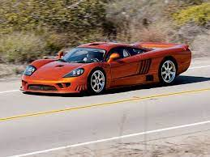
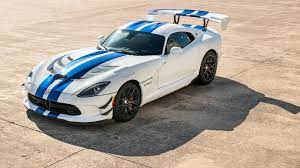

Saleen Automotive, the Southern California vehicle manufacturer has pulled an exhibit trifecta at two of the largest automotive museums in the country. Saleen currently has a comprehensive, historical exhibit at the LeMay Automobile Museum in Tacoma, WA, and is featured in two exhibits at the Petersen Automotive Museum in Los Angeles, CA. “Saleen: A Journey From the Heart of a Racer to America’s Supercar” is currently on display at America’s Auto Museum (AAM) aka the LeMay. This carefully curated exhibit features 17 historically, significant Saleen vehicles from its nearly 40 year history.
The Dodge Viper, manufactured in the U.S. from 1992 to 2017, is a two-seat sports car with coupe and convertible versions. The Viper is known for its knockout styling and blazing acceleration, as it is able to reach 0-60 MPH in as little as the low 3-second range. Although it was discontinued due to poor sales from its high price tag and inability to meet new safety regulations, the Viper remains a popular choice among performance and racing enthusiasts
Its sticker price is $399,150. • But dealers are getting about $700,000 for one, a bargain from last summer's peak price of $900,000 and change. The price does not include a spare tire or a jack. Neither is available. The price does include a free trip for two to the Ferrari factory in Italy for the purpose of showing the buyer how to drive it. It goes 122 mph in the quarter-mile. Flat out, it goes 197. You have our word. Insurance costs about $15,000. Every six months. The F40 meets all U.S. emissions and safety regulations. In short, it's legal. As soon as he got his, Formula 1 driver Nigel Mansell sold it.It pulls 1.01 g on the skidpad. Financed over five years, the monthly payment on an F40 runs about $12,000 a month. One buyer took no chances. Without even driving it, he sealed up his new F40 in the safest place available: his living room.
A legendary name in supercar history returns in the form of the retro-inspired, limited-edition 2022 Lamborghini Countach. While it's essentially a re-bodied Aventador with the heart and soul of a Sián, the Italian automaker did an incredible job recreating the original's iconic design for modern audiences. The reinvented wedge lacks the original's pop-up headlights and the massive rear wing that adorned it in its twilight years, but the trademark hexagonal wheel arches and scissor doors are both present. Unlike the old Countach, the new one features a small electric motor powered by a supercapacitor that teams with a mighty mid-mounted V-12 to generate a combined 802 horsepower. Lamborghini claims this powertrain will help it achieve zero-to-62 mph in 2.8 seconds and a 221-mph top speed. Before anyone texts their Swiss banker about a seven-figure wire transfer, all 112 copies of the 2022 Countach have already been spoken for.